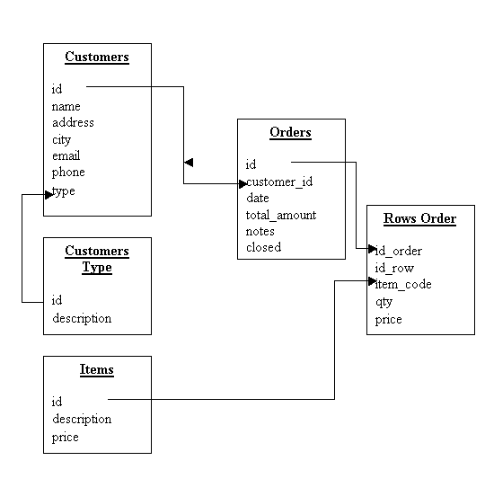

|
| |||||||||||||||||||
Questo capitolo presenta in dettaglio l'applicazione di studio "Il mio negozio online" che tu stesso andrai a sviluppare in modo autonomo andando avanti nel corso.
Il fine dell'applicazione e della sua struttura sarà spiegato in questo capitolo in modo che sia chiaro al programmatore il significato delle tabelle e delle funzioni che l'applicazione prevede.
L’applicazione consiste in un sistema per la gestione elettronica degli ordini dei propri clienti.
"Il mio negozio online" - Diagramma relazione tra tabelle

Lo scopo dell'applicazione sta nel memorizzare e manutenere tutte le informazioni relative ai clienti, ai prodotti e agli ordini.
L'utente dovrà essere in grado di aggiungere, modificare o eliminare le informazioni dalle tabelle "Customers", "Customers_type", "Items", "Orders" e "Rows_order".
Inoltre l'utente dovrà essere in grado di stampare una conferma d'ordine e di produrre un report mensile dei quantitativi totali ordinati per cliente/articolo.
| © 2008 Software4U.it | ||||